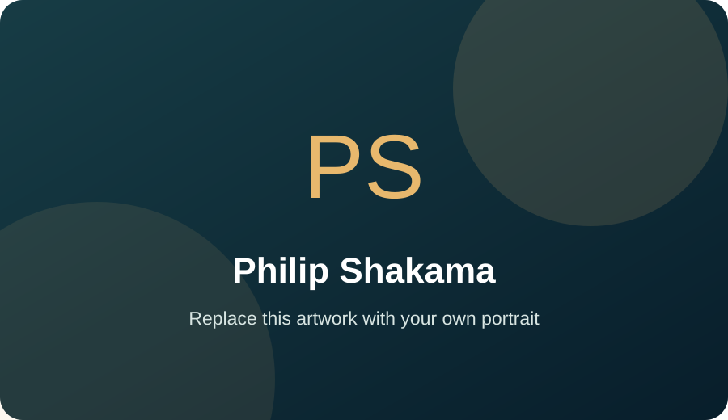

Academic Journey
Explore my programme, developing skills and research interests.
View academics →Hello, I'm Philip Shakama, a Bachelor of Science in Applied Biology student at Jomo Kenyatta University of Agriculture and Technology (JKUAT).
I am developing a strong foundation in biological sciences and the scientific approach to understanding living systems. This portfolio brings together my academic interests, personal pursuits and ways to connect.
Explore my academic journeyGet in touch
Applied Biology offers an opportunity to connect scientific knowledge with practical questions about organisms, health, agriculture and the environment. I value curiosity, discipline, continuous learning and the ability to communicate ideas clearly.
Personalise this page: Replace the illustrated portrait with your own clear photograph and add your year of study and home county if you want them displayed.
Explore my programme, developing skills and research interests.
View academics →Discover the activities and interests that keep me curious.
View hobbies →A starter selection of films and a space for a personal playlist.
View movie list →